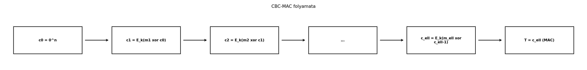

A MAC az integritás és hitelesség eszköze. A korábbi HMAC hash-függvényre épül, de mi van, ha a környezetben nincs erős hash, viszont van AES-hardver? Például chipkártyák, autóipari vezérlők és hardveres biztonsági modulok gyakran rendelkeznek blokkrejtjelező gyorsítóval, hash-függvénnyel nem feltétlenül. Kézenfekvőnek tűnik a CBC titkosítási módot felhasználni üzenethitelesítő kódként: titkosítsuk az üzenetet CBC-módban, és vegyük az utolsó rejtett blokkot. Ez a konstrukció valóban működik, de csak rögzített hosszúságú üzenetekre. Ha a támadó változó hosszúságú üzenetekre tud MAC-ot kérni, az összefűzéssel hamisíthat. Ennek a javítása a CMAC (Cipher-based MAC), amelyet fizetési és autóipari protokollok is használnak.
A CBC-MAC az üzenetet blokkonként fűzötti, -ről indulva, és az utolsó blokk a címke.

Szövegesen a diagram azt mutatja: a nyílt szöveg blokkjait sorban XOR-oljuk az előző rejtett blokkal, titkosítjuk, és az utolsó lépés eredménye a MAC-címke. A MAC kiszámítása nem adja vissza a köztes blokkokat, de a láncolás minden megelőző blokktól függ.
Definíció (CBC-MAC, rögzített hosszúság). Legyen blokkrejtjel, a blokkméret bitben (AES esetén ), a MAC-kulcs. Rögzített blokkszámú, blokk hosszúságú üzenetre a CBC-MAC:
A titkosítási CBC-től eltérően a kezdeti érték fix nulla (), nem véletlen IV. Az IV nem lehet véletlen, a címkével együtt elküldött érték: a támadó az helyett párt küldhetné, és a címke változatlanul érvényes maradna, hiszen nem változik – azonnali hamisítás. A padding nélküli, fix hosszúságú üzenetekre értelmezett konstrukciót nyers CBC-MAC-nek is nevezik.
Megjegyzés (biztonsági intuíció). Ha pszeudorandom permutáció (PRP), akkor rögzített mellett a CBC-MAC pszeudorandom függvény (PRF), tehát a támadó annak ellenére sem tud érvényes címkét előállítani, hogy választhat üzeneteket és kap MAC-ot. A formális, EUF-CMA típusú bizonyítás meghaladja ezt az alfejezetet; a lényeg, hogy a láncolás minden blokk változását az összes későbbi blokkon át az utolsó blokkba keveri.
Tekintsük a hibás használatot: a MAC-ellenőrző ugyanazzal a kulccsal tetszőleges hosszúságú üzenetre fogad CBC-MAC címkéket. A támadó két valid (üzenet, MAC) párt tud kérni, és ezekből hamisít. Legyen a blokkméret (a számolás kedvéért 128 bit).
A támadás általánosítható több blokkra is: ha a támadó ismeri egy blokkos üzenet MAC-ját (), akkor tetszőleges blokk hozzáfűzéséhez elég a egytagú üzenet MAC-ját lekérni, és az így kapott a üzenet MAC-ja. Az ok mindig az, hogy a belső láncolási állapot () ismert a támadó számára, és a következő blokk bemenete .
Megjegyzés. A fenti támadás egyetlen MAC-orákulum lekérdezést használ a hosszabbításhoz. Ez azt is megmutatja, hogy ha a MAC-ot rögzített hosszúságúnak szánják, de a hosszt nem ellenőrzik a verifikáció során, az végzetes. A CBC-MAC tehát csak fix hosszúságú üzenetekre elfogadható.
Továbbvitt eredmény. A hossz ellenőrzésének hiánya a MAC-oknál tipikus API-misuse, és visszatér az API-misuse: a leggyakoribb kriptográfiai programozási hibák alfejezetben.
Több megoldás létezik a nyers CBC-MAC összefűzéses támadásainak kivédésére:
Hossz előtag. A titkosítás előtt az üzenet elé írjuk a hosszát bitszámban, például egy bites blokkként. Ez a hosszúsági mező az első blokkon keresztül a láncolásba kerül, így a támadó nem tudja a trükköt alkalmazni, mert a nem a hosszmezővel kezdett láncolás közbülső állapota. A gyakorlatban ez extra kódolást igényel, és a hosszmező mérete korlátozza a maximális üzenethosszt.
EMAC (Encrypted MAC). A nyers CBC-MAC utolsó blokkját egy második, független kulccsal titkosítjuk: . Ez megöli a belső állapot közvetlen felhasználhatóságát, de két kulcsot és két titkosítási réteget igényel.
CMAC (Cipher-based MAC). Egyetlen kulccsal és két, abból származtatott alkulccsal megoldja a változó hossz kezelését, és a mai szabványosított megoldás.
Definíció (CMAC, röviden). A CMAC a CBC-MAC módosított változata, amelyet a NIST SP 800-38B és az RFC 4493 specifikál. Legyen blokkrejtjel, a blokkméret, a nulla blokk. A következő lépések:
A CMAC lényege, hogy a hosszúságtól függően más-más alkulcs (teljes: , rövid: ) módosítja az utolsó blokkot, így a támadó nem tudja az eredeti ciklus láncállapotát közvetlenül kihasználni. A padding egyértelműen invertálható, a hosszat nem kell külön tárolni.
Példa (CMAC alkulcsok AES-128 esetén). Legyen AES-128, . A feletti 2-vel való szorzás szabálya:
Például ha legfelső bitje 1, akkor a legalsó bájton. Az ilyen apró részleteket a GF(2^128) tárgyalásánál, az Carter–Wegman-MAC: GHASH és Poly1305 alfejezetben is használjuk.
Megjegyzés. A CMAC tehát nem igényel külön hash-függvényt, csak ugyanazt a blokkrejtjelezőt. Ezért rendkívül elterjedt a beágyazott rendszerekben.
A CMAC bizonyíthatóan pszeudorandom függvény, ha pszeudorandom permutáció, még változó hosszúságú bemenetekre is. A bizonyítást Iwata és Kurosawa mutatta be; a biztonsági korlát hozzávetőlegesen típusú, ahol a lekérdezések száma, a maximális blokkszám. A gyakorlatban ez azt jelenti, hogy AES-128 esetén blokknyi adat feldolgozása után elkezd nőni a születésnapi típusú ütközési valószínűség, ezért a kulcshasználati korlátok betartása fontos. Ezt az Nonce-visszaélés-ellenállás és kulcshasználati korlátok alfejezetben tárgyaljuk részletesen.
A CMAC tehát az EUF-CMA definícióval (lásd Az üzenethitelesítő kód és az EUF-CMA biztonság) szemben biztonságos, feltéve hogy a blokkrejtjel PRP. Az összefűzéses támadás lehetetlen, mert a támadó nem tudja a hosszfüggő utolsó blokkot a saját blokkjával úgy párosítani, hogy a belső állapot felismerhető maradjon.
Vegyünk egy játék CBC-MAC-ot bitre, ahol a “titkosítás” legyen a affin transzformáció. Ez nem blokkrejtjel, de kézzel számolható. Legyen , .
A hamisítás tehát pontosan ezt a lépést valósítja meg.
# OKTATÁSI CÉLRA – NEM ÉLES HASZNÁLATRA
def toy_encrypt(x, k=0):
return (x + 3) % 16
def cbc_mac_4bit(blocks):
# blocks: list of 4-bit ints
c = 0
for m in blocks:
c = toy_encrypt(m ^ c)
return c
# Támadó: két valid párt kérünk
m1 = 5
m2 = 9
t1 = cbc_mac_4bit([m1])
print(f"MAC([m1=5]) = {t1}")
x = t1 ^ m2
print(f"x = t1 XOR m2 = {x}")
t2 = cbc_mac_4bit([x])
print(f"MAC([x={x}]) = {t2}")
# Hamisított állítás: a kéttagú m1 || m2 MAC-ja t2
forged_mac = t2
real_mac = cbc_mac_4bit([m1, m2])
print(f"Hamisított MAC: {forged_mac}, valódi MAC: {real_mac}, egyezik: {forged_mac == real_mac}")A várt kimenet:
MAC([m1=5]) = 8
x = t1 XOR m2 = 1
MAC([x=1]) = 4
Hamisított MAC: 4, valódi MAC: 4, egyezik: TrueA példa azt illusztrálja, hogy a támadónak csak két egyblokkos MAC-ot kell kérni, és képes a kétblokkos üzenet MAC-ját megjósolni anélkül, hogy azt a MAC-orákulumra bízta volna.
Fizetés (EMV). A bankkártyás fizetésekben az EMV (Europay, Mastercard, Visa) szabványcsalád különböző kriptográfiai ellenőrző értékeket használ. A kártya és a terminál közötti tranzakció hitelesítésére ún. application cryptogram készül, amely gyakran CBC-MAC alapú. A CMAC vagy hasonló CBC-MAC típusú MAC-ek biztosítják a tranzakció adatainak integritását, és azt, hogy a kártya hitelesen részt vett a műveletben. A szabványban a 3DES és AES blokkrejtjelek MAC-műveletei is megjelennek; az AES-CMAC az érintés nélküli fizetések kriptogramjainál is szerepel. (Az EMV specifikáció pontos kriptogram algoritmusát a kibocsátó bank és az elfogadó hálózat határozza meg; az itteni leírás vázlatos, a konkrét verziószámot nem adjuk meg.)
Autóipar (AUTOSAR SecOC). A modern járművek belső CAN-hálózatán az ECU-k (elektronikus vezérlők) megbízhatóságát és a fedélzeti kommunikáció integritását a SecOC (Secure Onboard Communication) specifikáció írja elő. A SecOC a CAN-keretek hitelesítésére jellemzően ún. fresh value mellett CBC-MAC típusú MAC-ot (gyakran AES-CMAC-ot) használ, mert a beágyazott környezetben az AES hardveres támogatása elterjedt, a hash-alapú HMAC drágább. A CMAC így védi a CAN-üzeneteket a hamisítás és a visszajátszás ellen. A gyakorlatban a kulcsméret és a friss érték kezelése kritikus.
A CMAC tehát az egyik legelterjedtebb MAC-primitív az erőforrás-szegény, de hardveres AES-t tartalmazó rendszerekben.
== operátorral.
A Python == rövidre záró, időzítéses csatornát nyithat. A
MAC-ellenőrzéshez hmac.compare_digest vagy konstans idejű
összehasonlítás szükséges. Ezt az Időzítéses
támadások és konstans idejű programozás alfejezet tárgyalja.1. feladat (A). Számítsd ki a játék függvénnyel a (két 4 bites blokk) CBC-MAC-ját.
2. feladat (A). A fenti 4 bites játékban a támadó látja, hogy MAC-ja 13. Válaszd meg -t, és add meg a hamisításhoz szükséges egyblokkos üzenetet és a hamisított MAC-ot.
3. feladat (B). Igaz-e, hogy a CMAC biztonságos marad, ha a kulcsa megegyezik a titkosítás kulcsával, de a MAC-ot csak rögzített hosszúságú üzenetekre használjuk? Indokold.
4. feladat (B). Írj Python kódot (oktatási, nem
éles), amely kiszámítja egy blokkrejtjelre alapozott CBC-MAC-ot
tetszőleges hosszúságú, de blokkokra osztott üzenetre, és demonstrál
kiterjesztéses támadást. Használd a fenti oktatási
toy_encrypt függvényt.
5. feladat (C). Bizonyítsd be formálisan, hogy ha a támadó ismeri a blokkos üzenet CBC-MAC-ját értékben, akkor bármely blokk hozzáfűzésével a egytagú üzenet MAC-jának kérésével megkapja a hosszabb üzenet MAC-ját. Magyarázd el, miért romlik el a biztonság.
6. feladat (D). Támadás célpont: egy kis webes alkalmazás nyers CBC-MAC-ot használ a munkamenet-cookie-ra változó hosszúságú bemenettel. A támadó elfog egy cookie-t (64 bites MAC, 128 bites blokk). Hogyan döntheti el a támadó, hogy érdemes-e a kiterjesztéses támadást használni? (Gondolj arra, hogy a MAC hossza 64 bit.) Milyen védelmet javasolnál?
Önellenőrzés – válaszok
1. feladat – Megoldás
. . . . Tehát a MAC 13.
2. feladat – Megoldás
A támadó , . Választ . Az egyblokkos lekérdezendő . Az MAC-ja . A hamisított MAC 13. Valóban, a üzenet MAC-ja 13.
3. feladat – Megoldás
Nem. Ha a támadó ugyanazzal a kulccsal CBC-titkosítást kérhet (az -t ő adhatja meg), akkor egy mellett az egyblokkos üzenet titkosítása éppen ; így kiszámítja -t, ebből -et és -t, majd a CMAC láncolásának minden -hívását az orákulummal végezteti: tetszőleges üzenet érvényes címkéjét előállítja. A rögzített hossz ezen nem segít. Ezért a MAC és a titkosítás kulcsát külön kell származtatni.
4. feladat – Megoldás
# OKTATÁSI CÉLRA – NEM ÉLES HASZNÁLATRA
def toy_encrypt(x):
return (x + 3) % 16
def cbc_mac(blocks):
c = 0
for m in blocks:
c = toy_encrypt(m ^ c)
return c
m = [3, 12, 6] # tetszőleges hosszú (itt 3 blokkos) üzenet
t = cbc_mac(m)
m_next = 9
t_forged = cbc_mac([t ^ m_next]) # egyblokkos lekérdezés
print(t, t_forged, cbc_mac(m + [m_next]), t_forged == cbc_mac(m + [m_next]))Várt kimenet (Python 3.14.4-gyel futtatva; kézi számolás: , , ; , ):
14 10 10 True5. feladat – Megoldás
Legyen , és . A hosszabb üzenet:
A támadó az egyetlen blokkos üzenet MAC-ját kéri: , ami éppen a kívánt érték. A biztonság azért romlik el, mert a belső láncolási állapot ismert, és a támadó azt tetszőleges új blokkal tudja fűszerezni anélkül, hogy a teljes üzenetet ismerné.
6. feladat – Megoldás
A támadó általában akkor tudja a kiterjesztéses támadást használni, ha a MAC teljes blokkméretű (128 bit), és a munkamenet-cookie szerkezete ismert. Ha a MAC 64 bitre csonkolt, a támadó nem ismeri a teljes belső állapotot, így a pontos érték hiányzik. Ekkor brute-force szükséges, ami próbálkozás, nem praktikus. Javaslat: mindig CMAC-ot (vagy HMAC-ot) használjunk, a MAC-ot ne csonkoljuk a blokkméret alá, és ellenőrizzük a hosszt.
A CBC-MAC az üzenetet CBC-módban, fix kezdőértékkel feldolgozva az utolsó rejtett blokkot adja vissza. Rögzített hosszúságú üzenetekre, ha a blokkrejtjel PRP, akkor a CBC-MAC PRF, így EUF-CMA biztonságos. Változó hosszúságú üzenetekre azonban a konstrukció feltörhető: a támadó az MAC-jából () és a MAC-jából megkapja a MAC-ját, mert a belső láncolási állapot ismert. Ez az összefűzéses hamisítás az API-misuse: a leggyakoribb kriptográfiai programozási hibák alfejezetben visszatér. A hossz előtag, az EMAC és a CMAC javítás. A CMAC az utolsó blokkot vagy alkulccsal módosítja; az alkulcsok a érték -ben vett duplázásából származnak. A CMAC változó hosszúságú üzenetekre is bizonyítottan biztonságos PRF, az AES-CMAC szabványa NIST SP 800-38B és RFC 4493. A CMAC a Nonce-visszaélés-ellenállás és kulcshasználati korlátok alfejezet kulcshasználati korlátjainál is fontos. Gyakorlati alkalmazása: EMV fizetési kriptogramok és AUTOSAR SecOC az autóiparban.
Az RFC 4493 és a NIST SP 800-38B a CMAC szabványos forrása; a biztonsági bizonyítás Iwata–Kurosawa munkájára épül. A pontos szabványszakaszok és a gyakorlati EMV/AUTOSAR részletek ellenőrzést igényelnek, ezért az alkalmazási leírás vázlatos.